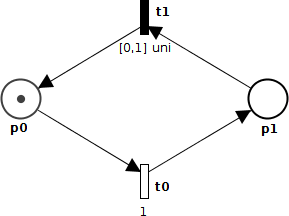
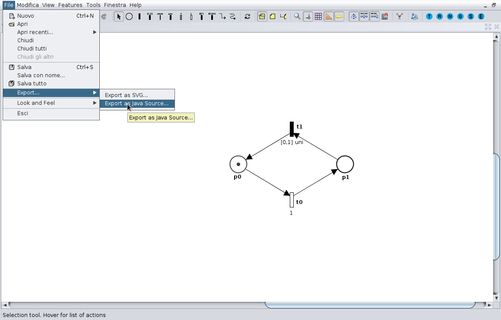

Oris allows to define the probability density function of a transition time to fire through expolynimial. The syntax to express expression is the following:
EXPOLY := TERM { '+' TERM }
TERM := NUMBER { '*' XTERM }
XTERM := 'x' | 'x^'INT | 'Exp[' NUMBER 'x]'
NUMBER := any valid BigDecimal string, e.g., '-1.2'
INT := any positive Integer string, e.g., '2'
So, these are examples of valid expressions:
1
0.5 + 0.5
0.5 + -0.5
0.5 + -0.5*x
0.5 + -0.5 * x
0.5 + -0.5 * Exp[1.0 x]
0.5 + -0.5*x*Exp[ -1.0 x]
0.5 + -0.5 * x * Exp[ 2 x]
0.5 + -0.5 * x * Exp[ 2 x] * x^2
0.5 + -0.5 * x^2 * Exp[ 2 x] + x
These are examples of not valid expressions:
0.5 - 0.5
0.5 + - 0.5
0.5 + -0.5 * Exp[1.0 x ]
0.5 + -0.5 * exp[1.0 x]
(0.5 + 0.5)
Note that the PDF measure on the support must be 1; ORIS does not check this at the moment, so be sure to normalize PDFs.
Also, be careful with expolynomial terms of high degree such as "Exp[1.0 x]*x^1000": internally integration by parts is used, so these generate several terms in successor classes during the analysis.
TBD
The java library can be downloaded from here:
DownloadThe first step is the definition of a Petri net. You can build by hand or using the "Export as Java source" function of the tool. Suppose that you want to build the net shown below:

This net can be defined as follow:
PetriNet net = new PetriNet();
Marking marking = new Marking();
//Defining nodes
Place p0 = net.addPlace("p0");
Place p1 = net.addPlace("p1");
Transition t0 = net.addTransition("t0");
Transition t1 = net.addTransition("t1");
//Defining arcs
net.addPrecondition(p0, t0);
net.addPostcondition(t0, p1);
net.addPrecondition(p1, t1);
net.addPostcondition(t1, p0);
//Defining features
t0.addFeature(StochasticTransitionFeature.newExponentialInstance(new BigDecimal("1")));
t0.addFeature(new RateExpressionFeature("1"));
t1.addFeature(StochasticTransitionFeature.newUniformInstance(new OmegaBigDecimal("0"), new OmegaBigDecimal("1")));
//Defining marking
marking.setTokens(p0, 1);
marking.setTokens(p1, 0);
Otherwise you can draw the net using the user interface and export it as Java Source as shown below:

To evaluate the transient probabilities of an STPN using regenerative transient analysis through stochastic state classes, and using extended regeneration, use the following snnipper of code:
PetriNet pn = new PetriNet();
Marking m = new Marking();
build(pn, m);//Here build your Petri net and marking
//Configuration
DeterministicEnablingState initialRegeneration = new DeterministicEnablingState(m, pn);
BigDecimal timeLimit = new BigDecimal(""+10); //Is the "time limit" of the oris tool interface
double discretizationStep = 0.1;//Is the discretization step of the oris tool interface
BigDecimal allowedError = BigDecimal.ZERO; //The parameter is "Allowed error" of the Oris tool interface
MarkingCondition absorbingCondition = MarkingCondition.NONE; //Absorbing condition, "Stop condition" of Oris tool interface
String reward = "p0";
boolean cumulativeReward = false;
//Analysis step 1: state space exploration
RegenerativeTransientAnalysis analysis = RegenerativeTransientAnalysis.compute(
pn,
initialRegeneration,
new DeterministicEnablingStateBuilder(pn, true),
new EnablingSyncsEvaluator(),
new TruncationPolicy(allowedError, new OmegaBigDecimal(timeLimit)),
absorbingCondition,
false,
false,
null,
null,
false);
//Analysis step 2: find kernels and solve discretized markov renewal equations
TransientSolution solution = analysis.solveDiscretizedMarkovRenewal(
timeLimit,
new BigDecimal(""+discretizationStep),
MarkingCondition.ANY,
false,
null,
null);
//Analysis step 3: evaluauting reward
TransientSolution rewards =
TransientSolution.computeRewards(cumulativeReward, solution, reward);
//Accessing result
int rIndex = 0;
for (RewardRate singleReward : rewards.getColumnStates()) {
System.out.println("Solution for reward " + singleReward );
for (int t = 0; t < solution.getSamplesNumber(); t++) {
System.out.println("t= " + (t * solution.getStep().doubleValue()) + " --> " + solution.getSolution()[t][0][rIndex] );
}
rIndex++;
}
If instead you don't want to use extended regeneration, you can use the following:
PetriNet pn = new PetriNet();
Marking m = new Marking();
build(pn, m);//Here build your Petri net and marking
//Configuration
BigDecimal timeLimit = new BigDecimal(""+10); //Is the "time limit" of the Oris tool interface
double discretizationStep = 0.1;//Is the discretization step of the Oris tool interface
BigDecimal allowedError = BigDecimal.ZERO; //The parameter is "Allowed error" of the Oris tool interface
MarkingCondition absorbingCondition = MarkingCondition.NONE; //Absorbing condition, "Stop condition" of Oris tool interface
String reward = "p0";
boolean cumulativeReward = false;
//Analysis step 1: state space exploration
RegenerativeTransientAnalysis analysis = RegenerativeTransientAnalysis.compute(
pn,
m,
new NewlyEnablingStateBuilder(pn, true),
new NewlyEnablingEvaluator(),
new TruncationPolicy(allowedError, new OmegaBigDecimal(timeLimit)),
absorbingCondition,
false,
false,
null,
null,
false);
//Analysis step 2: find kernels and solve discretized markov renewal equations
TransientSolution solution = analysis.solveDiscretizedMarkovRenewal(
timeLimit,
new BigDecimal(""+discretizationStep),
MarkingCondition.ANY,
false,
null,
null);
//Analysis step 3: evaluauting reward
TransientSolution rewards =
TransientSolution.computeRewards(cumulativeReward, solution, reward);
//Accessing result
int rIndex = 0;
for (RewardRate singleReward : rewards.getColumnStates()) {
System.out.println("Solution for reward " + singleReward );
for (int t = 0; t < solution.getSamplesNumber(); t++) {
System.out.println("t= " + (t * solution.getStep().doubleValue()) + " --> " + solution.getSolution()[t][0][rIndex] );
}
rIndex++;
}